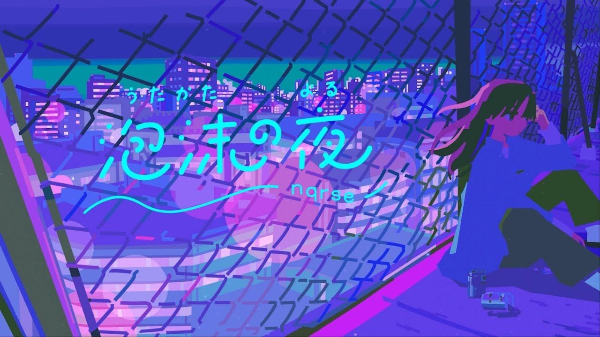

|  |
泡沫の夜
作詞 nqrse
|
|
今は取り繕っていたいよ 日が昇るまでは 目を逸らさなきゃいけないの 不安感 ゴシップ 懲りないね 月並みな言葉でいいの この虚無を埋めて 溢れ出る前に だからいまは 夢で今夜 笑っていたいね 霞む景色 巡る思い出と 夜の静寂に沈み込んで 昨夜を思い漏らすため息 夢現に歩いたベイビー シューレース結び直した0時 頬を濡らすモン born again 胸を焦がして待つ 駆け引き 運命のお世話になっちゃいないし 偶然出会った君で平気 そんなものよ born again 垂れ流したbeats 不安定な空 叱るような夜風 煙草の灰が上がった日 明日が待ってる 気付けば遠くなった dream 自分に言い聞かせる 今日のためのハッタリ 片手にロマン翳して埋める茫漠 口だけの I roll up 徒然なメリーゴランド この道化も夜に溶かそう Friday night は部屋をただ見守る常夜灯 香りも形もない 右ばっか倣って It's gonna be alright 思い耽る方々 夜は泡沫さ もういいかい？ You should already know that |
昨夜を思い漏らすため息 夢現に歩いたベイビー シューレース結び直した0時 頬を濡らすモンborn again 胸を焦がして待つ 駆け引き 運命のお世話になっちゃいないし 偶然出会った君で平気 そんなものよ born again あの子たちの夜 わたしの夜 ムジナの夜 同じような奇跡を焼き増していくの 狭いまぶたの裏に壮大なドラマ このありきたりな街で 誰も彼もが 昨夜を思い漏らすため息 夢現に歩いたベイビー シューレース結び直した0時 頬を濡らすモン born again 胸を焦がして待つ 駆け引き 運命のお世話になっちゃいないし 偶然出会った君で平気 そんなものよ born again |